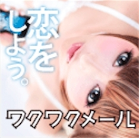
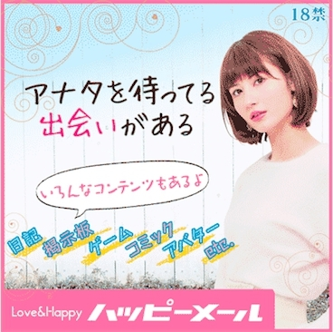

| 40歳代男性のための、モテ男になる方法教えます！: マンネリした生活からの脱却 | |
| Mr.ジュンジ | |
| (2016) | |
40 歳代男性のための、モテ男になる方法教えます！
40
歳代の男性の方々、こんにちは。
男はいくつになっても男。男でいたい！！そう思っている方が、おそらくこの本を読んで頂いているのではないかと思います。
しかしながら、人間という生き物は経験をもとに、希望を抱いたり、歓喜したり、または悲しんだり、諦めたりしてしまう生き物なのです。
最近はいかがですか？何かを諦めていませんか？
働き盛りの40
代。バリバリ働き、結婚されている方は奥様やお子様の相手もしつつ、それを理由に充実していると自分に言い聞かせ、何かを諦めていませんか？
そうです！！モテ男になること、または再びモテ男に復活すること！！
モテて悪い気はしませんよね！でも40
歳にもなると世間体やらを気にして、女性に対しての行動を自粛してしまう・・・。
これはもったいないです！
しかも、我慢しているので身体にも良くないのです。
さあ、身体を解放し、本来あなたがあるべき姿を取り戻していきましょう！！
加藤茶さんと結婚した綾菜さんをはじめ、篠原涼子さんと市村正親さん、伊原凛さんと松本人志さん、小野ゆり子さんと大森南朋さんなど、みな、年上の男性と結婚しています。一昔前では大きな驚きとして伝えられた年の差婚ですが、最近はそこまで珍しい結婚スタイルではなくなってきています。
また、結婚まで至らなくとも、年上男性とのお付き合いも随分と身近になってきたのではないでしょうか。養命酒製造株式会社の調査によると（2009年）、20 ～30 歳の未婚女性502名のうち、「おじさんでも人によっては恋愛対象になる」と答えた人は実に72 ％ に。その他にも、「20 代女性」と「40 代男性」は相性が良いといった調査結果や、関連する書籍などが出て話題となりました。
なぜ、女性は、20 代というモテる時期に同世代ではなく、年上男性に心を許すのでしょうか。
考えられる理由としては、やはり同世代にはない「経験値」。心理的・経済的に年上男性の方が経験豊かです（なかには例外もありますが）。
女性の悩み事にもそれなりに応えることができ、ちょうど良い距離感で寄り添ってくれる年上男性。嫉妬心丸出しで女性を束縛する同世代とは違いますよね。経済面でもさほど苦労することはないでしょう。
早くに結婚して家族に貯金を持っていかれた男性よりも、長く独身生活を送った分、貯えがあります。そういったあらゆる面に見える"余裕"が女性を虜にするのです。
しかし、どんなに素敵な男性であっても、やはり、長くお付き合いをしていくうえで、少なからず「ズレ」が出てくるもの。埋めようのない年齢の差というものがあるのです。
参考にしたのは、武蔵大学社会学部助教の田中俊之氏の著書『＜ 40 男＞ はなぜ嫌われるか』。同書では、40 代男性の内側を詳しく紹介しています（2015年時点で30 代後半から40 代前半までの男性を、本書では「40 男」と呼んでいます）。
まずは、結婚観について。同書によると、25 歳～29 歳までの男性の未婚率は69 .2％ とのこと（2010年の調査）。同様に30 歳～34 歳で46 ％ 、35 歳～39 歳で34 .8％ 、40 歳～44 歳で28 ％ となります。40 代に入ってもいわゆる"残された男たち"は30 ％ ほどいるのです。
「もしかして結婚しない人生を送るのだろうか......」とマイノリティとなった自身の立場に焦燥感を隠せなくなると、田中氏は言います。余裕のある世代ではあるのですが、一方では、早く結婚したいという願望もあるのですね。
もう少し40 歳代の価値観や時代背景を見てみましょう。
40 歳代の小学生時代にはランドセルは黒と赤の2種類しかなく、出席簿は男子が先で女子が後となっていました。ランドセルにバリエーションはなく、出席簿も男女混合ではありません。基本的に男女がふたつにわかれて育ちました。
両親ら大人を見てみると、男性は仕事をするもので、女性は家庭を支えるものという思考が"当たり前"でした。いまの時代の流れに合わせてイクメンになってくれる可能性もありますが、上記が幼少期の常識だったのです。
難しい問題に直面し続けてきた世代
4歳代が成人した今から20
年前の1995年といえば、音楽でいうとMr.Childrenやスピッツ、THE YELLOW MONKEY、LArc-en-Cielなどが人気絶頂でした。今でも活躍するアーティストもいるので、それほど昔に感じないかもしれませんね。
その頃に就職したこの世代は、ロストジェネレーション世代とも言われています（1972年～1982年生まれが該当）。求人倍率が低下した時期に就職した割を食った世代です。
世の中は景気の悪いニュースがあふれ、デフレ不況も深刻化。マクドナルドのハンバーガーは59 円にまで値下がりしたことも。民主党政権の誕生を目の当たりにし、アメリカ同時多発テロ、東日本大震災など、私たちの生き方の根幹を見直さなければと考えさせる事件や災害が発生しました。
どの世代も様々な出来事に影響を受けるものですが、特にこの世代は難しい出来事が多かったのかもしれません。成人して20 年、経験値という意味では余裕があるように見えますが、その反面でなかなか難しい問題に直面し続けてきたのです。
田中氏もまたこの世代について、
「男は家庭を顧みず仕事だけをしていればいいという『昭和らしさ』と、ワークとライフのバランスに気を使い、家事や育児も頑張ろうとする『平成的男らしさ』の狭間に生きている、『働いてさえいればいい』と開き直ることは難しいけれど、若い世代のようにさらりと家事・育児をこなせるわけではない」
と分析します。
表向きの姿からはなかなか想像できない、40 歳代の苦労が浮かび上がってきました。特に男性と女性の"役割"については、時代に合わせて自らの価値観を変化させてきた世代でもあるのです。
そんな波乱万丈な世の中を経験してきた40
歳代・・・。
経験豊富なだけに、妙なところでのこだわりが強いのも否めません。こだわりが強いとどうしても納得いかない事に対してとりあえず否定したくなります。これは直さなくてはいけない行動です。
このことを踏まえ40 歳代の若い娘との会話について話していきます。
「いま20 代女性はなぜ40 代男性に惹かれるのか」という本に、
40
代男性と20
代女性。
彼ら彼女らは、ちょうど「壁期」という、その後の人生の選択を迫られている時期にいます。両者はストレスを強く感じているという点で共通しますが、当然のことながら抱えるストレスの内容も質も違えば、解消したい方向性や求めていることも違います。それゆえに、このふたつの世代はお互いに穴を埋め合う関係であり、まるで引き寄せられるように惹かれ合うという実態が電通独自調査「ウェルネス1万人調査」の分析から浮かび上がってきました。
という事が書かれています。
そして、40
代男性のストレスを解消するのが20
代女性であり、
20
代女性のストレスを解消するのが40
代男性だ、
という事も書かれています。
そして20
代女性は受け入れてもらいたいと思っているが、草食系男子が増えた20
代では女性を受け入れるだけの包容力がない。
しかし、40
代男性には女性を受け入れる包容力があるからモテると書かれています。
つまり、女性を受け入れる包容力のある男性がモテる、という事になりますね。
具体的に言うと、女のわがままを受け入れ、落ち込んだり嫌なことがあったりしたときに親身に話を聞き、女性がすることを暖かく見守る、そういった男性が包容力がありモテるのです。
40 代男性は大人で落ち着いていて余裕があり、そして人生経験が豊富なのでトラブルの回避の方法がわかているからモテるとよく言われます。これらのことと包容力って結局は同じようなものですよね。
ですから、結局は包容力のある40 代男性は、20 代の若い女性からモテる、という事になります。
しかし、40 代男性であれば包容力がある、と見られるかといえば、そういう訳ではありません。
そこで、具体的にどのようにすれば包容力があると見られ、20
代の若い女性にモテるようになるのでしょうか？
ここでは会話を中心にポイントを紹介します。
若い男性の言葉を使わない
若者言葉を使うと、大人の雰囲気がなくなります。
「チ～っす」（こんにちは）
「おしゃかわ」（おしゃれでかわいい）
といった若者言葉は使わないほうがいいです。
女性に話をさせる
女性のいう事を親身になって聞くのが包容力といっても、女性が話をしないと親身になって聞くことができません。
女性に質問をして話をさせるといいですよ。
落ち着いて会話する
好みの女性と話をするとき、
緊張して落ち着きがなくなる気持ちはよくわかります。しかし、それではいつまでたってもモテません。
落ち着いて堂々と話をすることを心がけましょう。
どうしても緊張する場合は、初めは好みでない女性と話をして、若い女性との会話に慣れていくといいですよ。
女性のいう事を否定しない
20
代の若い女性は自分を受け入れてもらいたいと思っています。それなのに、女性のいう事を否定したら、
受け入れてもらえないと思われてしまいます。
女性のいう事が間違っていても、基本的にそれを否定しないようにしたほうがいいです。
本当は時には否定したほうがいいです。しかし、価値観にかかわること、人間性にかかわることを
否定したら嫌われます。女性のいう事を否定して大人の男に見られるのは難しいです。
ですから、初めは否定しないほうがいいです。
悩みに対してアドバイスしない
女性が悩みを話してきても、アドバイスをしないほうがいいです。女性は悩みを話すだけでスッキリします。
それ以上のことを望んでないことのほうが多いです。また、下手なアドバイスをすると逆に嫌われることもあります。「大変だね」「ツラいだろうね」など同情するだけにして、アドバイスはしないほうがいいでしょう。
もし「どうしたらいいと思う？」と聞かれたら、「僕だったら......と思うけどなぁ～」という感じで自分の意見だという事を強調するといいですよ。
そして、「でも状況次第だからなぁ～」という感じで、必ずしも適切なアドバイスとは言い切れない、という事を付け加えておいたほうがいいです。
現在モテていない人の大半は自分に自信がなく余裕が無い人が多い。 逆パターンの厚顔無恥で自信満々タイプの場合はどんなブサイク男であっても 大抵彼女がいたり既婚者だったりする。 結論から言うと「性格が悪い男は女に好かれやすい」と思われる。
その理由はというと、性格が悪いという定義には「攻撃性」が含まれているからです。 女性は性的には受け身であり、男性からのアクションがなければパートナーを作る事がままなりません。 最近では肉食系女子という言葉が流行していますが、それでもまだ極一部です。 大抵は草食系で男性からのアタックを待っています。
つまり、性格が悪く相手のことをあまり気にしないような男は女慣れしていて平気で話しかけたりデートに誘うし、 傷つけるのも躊躇しない、自分勝手で強引、このような一見嫌われる特徴が逆に男らしさとしての 好感度をアップさせています。 実際男友達から見ると「腹黒い」「あんまり好きじゃない」という奴は結構モテたりします。 他人に厳しく自分に甘い、実はこのような男こそが女の理想像なのかもしれません。
女性は動物的本能が強いので自分よりもランクが上の男に魅力を感じやすい。 年上男性しか恋愛対象に入らない年下女性も大勢いる。 また、女性は力強いボス猿にはヘコヘコして擦り寄るけれど、弱い猿には見向きもしない、 という動物っぽい残酷な本能も持っています。
どんなブサイク男でも彼女持ちや既婚者というだけで、モテ出すのは、 特定の異性のパートナーがいるということはそれなりに価値がある人物だと女性が判断するからです。 他にも社会的地位や名声がある権力者も女性には魅力的に映ります。 逆に言えば、一度格下の男だと認識されると扱いが非常に雑になる一面がある。
出会った当初の印象で男性に余裕や自信を感じると、恋愛の主導権が女性側にならないので、 それだけでも男性側が有利になります。 ここで、包容力やリラックスした対応を見せると、あっという間に好意を持たれます。 複数の異性にアプローチを繰り返している男性は、異性と接する経験値が蓄積していき、 女性を紳士に扱い居心地の良い気分にさせるコツを心得ています。 極端な例では、うだつの上がらない彼女いない歴＝年齢の喪男よりも、チャラいナンパ師の方が色気も刺激もあるので 断然モテるのです。 これらも全て余裕があるからこそ起こる現象でしょう。
～余裕の無さが見て取れる態度～
・相手に気を遣いすぎて自分の意見や本音が喋れない
・優し過ぎて刺激や面白みが無い、いい人で終わってしまうタイプ
・緊張や恥ずかしさからか無表情で第一印象のイメージが怖い
・惚れた女性だけを一途に追い求めてしまう
・嫌われたくない一心で何も面白い言動ができない。
・デートの時間を相手の予定に全て合わせる。
・変に格好つけてしまって、自分の欠点や短所、失敗談を話さない
・相手の行動やプロフィールを根掘り葉掘り探ろうとして束縛してしまう。
思いやり精神は大切ですが、男女関係においてはそれが逆に心理的な壁となることもある。 いつまでも敬語で話しかけていると丁寧を通り越して余所余所しい他人行儀になってしまう。 優しい言葉ばかりかけていると、なんだか真剣味がなくて軽いお世辞のように聞こえるなど。
本当の意味でエスコートするケースは良いですが、もしかしたらそれでさせおせっかいに思われるかもしれない。 男も女も公平な態度で接する状態が健全であり、もっというなれば、 余裕を持つ男性の後ろを追いかけていたいのが女心の本質だということです。
また、モテる40 代男性は女性を褒めることも欠かせませんが、スパイスとして貶す事もあります(通称いじる、ディスる、ネグる)。 実はこれが女性にはウケるのです。 元々女性は支配されたい願望、強い男に従いたい、お世話したいという無意識の欲求があります。 母性本能というもので、様々な行為によって刺激されます。
具体例を挙げれば 悪口を言われたりからかわれたり、 男性が子供っぽい自信満々な言動したり、強気な態度とはうってかわって隙だらけでだらしない醜態をさらしていたりなどです。 女性は受け身でＭなタイプが多いので、積極的でＳな男性が好きです。 どんなに能力が無くても自信満々で迫ってくる男は格好いいと思ってしまう のが女性心理の特徴です。 逆に言えば、自信や余裕があれば他の条件は何も要らないのと同じようなものです。 余裕の無さが露呈してしまうような態度だけはしないように注意しましょう。
余裕を持つ方法
・必死にアピールしすぎない
婚活がうまくいかない男性がよくやってしまいがちな行動があります。 それは自分の長所や自慢話ばかりするということです。 冷静になって考えるとわかると思いますが、人はメリットや聞こえの良い言葉ばかり並べられると、 反発心や猜疑心(疑念)のようなものが芽生え恋愛感情が冷めます。 「私は優れた人間です」と何度も言う人を尊敬したくはならないしあまり好きになれないことでしょう。
恋愛もそれと同じです。 「絶対逃がさないぞ」という下心ありの思いで口説くと相手を余計に遠ざける結果に繋がります。 「自分の良さをアピールしてやろう」 と思うよりも 「お話してくれたら嬉しいな」という友達として仲良くしたいというスタンスで望む(親密になりたいという意志はある)と自然と関係が進展していきます。 恋愛は追いかける方が不利です。 相手にアプローチしつつも、頑張り過ぎず気楽に相手からのアクションを引き出すよう、 微妙に押し引きを考えると アタックの成功確率がアップします。 特に女性へのアプローチの場合、自分のことを話を出すよりも、 相手の話を引き出すことで親近感や愛情が芽生えるので「自分が自分が」という状態にならないように気をつけよう。
また、心理学的にも必死すぎが良くないという実例があります。 人は「返報性の法則」から 相手から受けた行為を返そうとする性質があります。 例えば、大きなぬいぐるみをプレゼントされた時、 相手にもそれと大よそ同等の価値のものをお返ししたいと思います。 ブランド品や高価な金品を与えると、それだけ相手には心理的に負担になってしまい、 離れたくなる作用が働きます。
10 万円の物を返すのは金銭的に負担だし、 かといって飴玉でお返しなんて失礼で怒らせるかもしれないと考え付き合うのが嫌になります。 女性は高価な金品よりも、ささやかな愛情を与えたほうが喜びます。
モテない中高年男性がやりがちなＮＧ行動がまさに値段が高いプレゼントを贈るという行為です。 女性はブランド品よりも、「最近どうなの？」や「おはよう」という軽い挨拶や近況報告をしあう関係の方が ロマンスを感じる生き物です。 ガツガツとした姿勢で追いかけると、逃げてしまうのが女心の機微というものなのです。
・自分の意志を明確にする
モテない男性は自意識過剰気味で自分の評価を気にしたり、相手に気を遣いすぎる傾向がある。 これは男としてかっこ悪いことです。 女性は男性に堂々と胸を張っていて欲しいと願うものなので、 多少口が悪く乱暴であっても、己の道を突き進んで欲しいと思っています。 遠慮しないで冗談を言ったり何でも相談しあえるということは理想の彼氏に挙げる条件のひとつでもあります。
嫌われてもいい、他人のことは気にしない、自分の筋を通す。 という姿勢は女性からすれば非常に逞しく魅力的に映る格好いいポイントです。 女性は優柔不断で何か分岐点があるときに非常に迷いやすいので、 物事を瞬間的に決断し選択できる男性を好きになりやすい性質があります。
デート中のフェミレスで男性が一目メニューを見てすぐさま注文する姿を見て結婚を決めたという女性もいるぐらいですから、 上記の三つの心構えは思った以上に重要な要素です。 言いたい事をいい、やりたいことをやる。 このような自由奔放さは女には無い男特有の強さなのです。
社内イケメンは必ずしも顔がハンサムな訳ではありません。実はモテる秘密は行動にあったのです。
それでは、具体的にどのような行動がイケているのか見てみましょう！
①
コミュニケーション
イケメンは挨拶や礼儀などのコミュニケーションをしっかり行います。
挨拶は社会人の基本ですが、いつの間にか疎かになってしまうことが多いですよね。
そこで、イケメン別にどのような挨拶をするのか比較してみました。
○フレッシュイケメンの例
「（元気な声で）○○さんおはようございます！、今日も暑いですが一日頑張りましょうね！（ニコッ）」
○ダンディイケメンの例
「（低い落ち着いたトーンで）○○さんおはよう。今日もよろしくね、暑いから休憩をこまめにいれなよ。」
いかがでしょうか。夏の暑い朝の挨拶シーンでしたが、片や明るく笑顔で元気付けてくれるイケメン、片や落ち着く声で体調の心配をしてくれているイケメン、どちらも女性社員側からしたら嬉しくなるような場面ですね！月曜日の憂鬱な朝でもやる気が出ます！
このようにイケメンは自然と相手を元気づけているのです。
②
視野が広い
イケメンは周りをよく見ており、女性の変化によく気付きます。ではイケメン別に行動をみてみましょう。
○フレッシュイケメンの例
「○○さん、髪きりました？僕ショートカット好きなんですよ！すごく似合ってますね！」
○ダンディイケメンの例
「○○さん、顔色悪そうだけど大丈夫？これ、よかったら飲んでね。（栄養ドリンクを差し出す）」
シーンはそれぞれ違いますが、片やヘアーカットやカラー後に気付いて声を掛けてくれるイケメン、
片や体調が悪いときに気に掛けてくれて栄養ドリンクなどを振舞ってくれるイケメン。
このようにイケメンは「女性が自分から言いたくても言い出せない部分、気付いて欲しい部分」を
ちゃんと拾いケアしてくれるのです。
③
リーダーシップ
ダンディイケメンに多く見られますが、会議や打合せ時の進行や話が上手です。
全体を見渡して発言を促したり、良い意見を言った人を誉めたりする「リーダーシップ」に
女性は惹かれるものです。
④
上司に対してもしっかり意見を言える
フレッシュイケメンのに多く見られますが、上司とも良い関係を築けています。
目上の人に対してはっきりと意見を言うことができる「男らしい人間」に女性は惹かれます。
⑤
話題にタイムリーである（ニュース、ドラマなど）
イケメンは時事ネタやドラマネタに強く、女性と会話をするための材料を常に持ちあわせています。
女性の方が男性よりもメディアに敏感ですので、情報通であれば必然的に女性から話かけられる確率が
上がりますよね。イケメン別に見てみると以下のような傾向があります。
○フレッシュイケメン･･･流行のドラマやTV番組、芸能ニュースに強い
○ダンディイケメン･･･政治や世論、スポーツニュースに強い
「あの人が見てるから私も見てみよう。」なんて女性に影響を与えていることでしょう。
⑥
公私のギャップがある
女性は男性のギャップに惹かれます。業後の飲み会や休日イベントなどで業務中とは違う
くだけた一面を見せることで「休日もこの人と一緒に過ごしてみたい」と思わせることができます。
どちらのタイプのイケメンも「いつもとは違う一面」を意識しているのです。
⑦
気に入った子は特別に扱う
え？イケメンは平等じゃないの？！と思う方もいると思いますが、実は違います。
オフィスラブの行く着くところは自分が気に入った子と恋愛するのが目的です。
女の子は「自分だけ」と特別扱いすると舞上がるように喜びます。
アプローチ方法をタイプ別に比較するとフレッシュイケメンはストレートに気持ちを言動や行動に
移している方が多く、ダンディイケメンは少しずつジャブを打つように気持ちを伝える方が多いようです。
40
代の方々、もっともっと恋愛しましょう！そして、仕事に遊びに活かしていきましょう！！
いくつになっても恋愛は本能です。相乗効果間違いなしなんです。
さらに自分を磨き、女性を虜にし、バラ色の40
代を過ごしましょうよ！！
草食男子の溢れる今が本当にチャンスなのですから。
そうは言ってもなかなか出会いもない・・・。という方も多いかもしれません。
そこで私も何人かと実際に出会っている優良な出会いサイトをご紹介しますね！
数多くの出会いサイトがある中、この３つがベスト３だと思います。
とにかくサクラ（課金のみ目的とした会う気ゼロの女の子）が少ない。ここ重要なポイントです。
ただただお金(ポイント)を消化されるだけなので。
会員登録は無料なので、とりあえず登録だけしている方ばかりです。
知らない間に女性からメールも来たりするので単純に楽しいですよ。
☆
おススメナンバー１サイト☆
YYC（ミクシー運営で安心安全）女性会員数ダントツ多い
☆
おススメナンバー２サイト☆
ワクワクメール 女性誌多数掲載中！こちらも女性会員数多数

☆
おススメナンバー３サイト☆
ハッピーメール 手堅く出会えます。審査もしっかりです！
